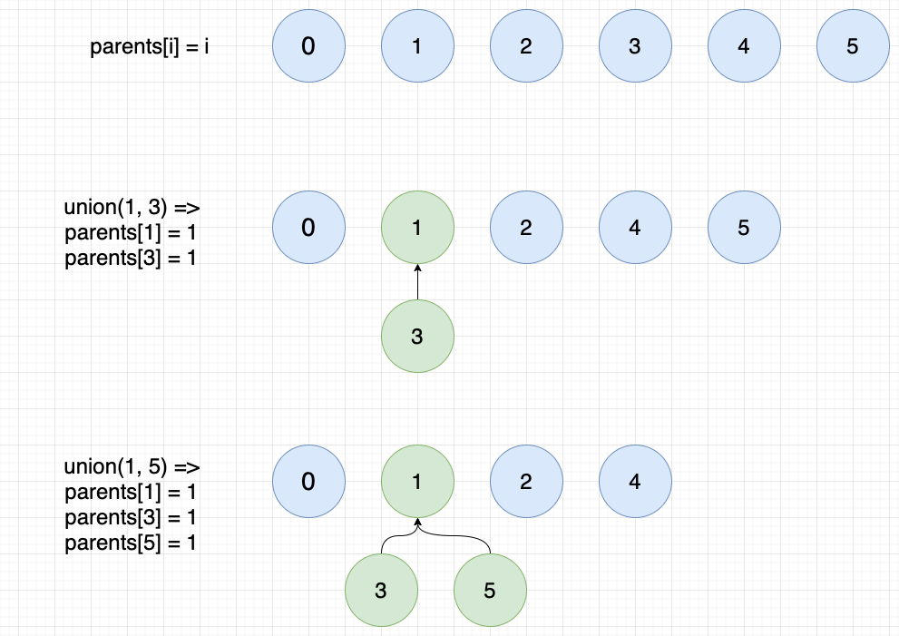
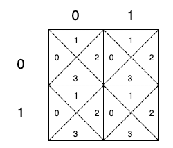

详解并查集(Union Find)
What’s Union Find?
Union Find is useful in finding connected components. The idea behind UF is quite simple.
- You have N items initially. Each item forms its own group by setting parent to pointing to itself, i.e.,
parents[i] = i. - Then you can union two items if they are connected or share some common properties in your problem definition. E.g.,
union(1,3)will connect item 1 and 3 and make their parents both pointing to the same item. - You can continue
union(x, y)and put more items into one group.

A very common implementation of Disjoint Set Union. Here I applied two optimization: path compression and union by rank. The idea is to flatten the tree when find(x) is called so as to reduce the time complexity, which is O(logN) now. In reality, the amortized time complexity is a very small constant. Refer to wiki for more detailed discussion.
1 | public class DSU { |
How to user UF?
While it’s easy to get the idea of UF, it’s not straightforward to use it to solve problems sometimes. Especially when the problems are presented in a way distancing itself from UF. I’ll give two examples to illustrate the use of UF.
Redundant Connection
Problem
In this problem, a tree is an undirected graph that is connected and has no cycles.
The given input is a graph that started as a tree with N nodes (with distinct values 1, 2, …, N), with one additional edge added. The added edge has two different vertices chosen from 1 to N, and was not an edge that already existed.
The resulting graph is given as a 2D-array of edges. Each element of edges is a pair [u, v] with u < v, that represents an undirected edge connecting nodes u and v.
Return an edge that can be removed so that the resulting graph is a tree of N nodes. If there are multiple answers, return the answer that occurs last in the given 2D-array. The answer edge [u, v] should be in the same format, with u < v.
Example:
Input: [[1,2], [1,3], [2,3]]
Output: [2,3]
Explanation: The given undirected graph will be like this:
1
/ \
2 - 3
Solution:
The problem only needs to remove one edge that’s redundant and the last one in the case of multiple answers, which significantly simplifies the problem.
Think with UF in mind, each vertex in the graph is a group at first. With each edge connecting two vertices, they become the same group. If we find two vertices of an edge already in the same group, we find the answer. The reason is an edge between two vertices that are already connected will cause cycle, as illustrated in above example.
And the code. Here I used a simplified DSU without rank.
1 | public int[] findRedundantConnection(int[][] edges) { |
Regions Cut by Slashes
Problem
In a N x N grid composed of 1 x 1 squares, each 1 x 1 square consists of a /, \, or blank space. These characters divide the square into contiguous regions.
Return the number of regions.
Note that backslash characters are escaped, so a \ is represented as “\\“.
Example 1:
Input:
[
“. /“,
“/ .”
]
Output: 2
Explanation: The 2x2 grid is as follows: 
Example 2:
Input:
[
“. /“,
“. .”
]
Output: 1
Explanation: The 2x2 grid is as follows: 
Example 1:
Input:
[
“\ /“,
“/ \“
]
Output: 4
Explanation: The 2x2 grid is as follows: 
Solution
It’s not straightforward to link this problem to UF though the regions cut by the slashes may remind of groups then UF. First, if we each grid cell into 4 small cells like below figure, we know that the four small cells are connected to each other without slashes or back slashes. Also, we know that each small cell connects to its neighbor small cell regardless of slashes or back slashes. Let cell(row, col, index) represents the small cell of index at grid[row][col]. Then we get:
cell(1, 0, 1)connects tocell(0, 0, 3)cell(0, 1, 0)connects tocell(0, 0, 2)for sure. And all other neighbor cells to be connected.- If there is no / in
grid[row][col], thencell(row, col, 0)connects tocell(row, col, 3)andcell(row, col, 1)connects tocell(row, col, 2). - If there is no \ in
grid[row][col], thencell(row, col, 0)connects tocell(row, col, 1)andcell(row, col, 2)connects tocell(row, col, 3).

With above in mind, we can apply UF here by initially setting each small cell to its own group. Iterate all small cells and union connected cells based on the above rules. The resulting groups is the answer to this problem.
And the code. Here DSU is defined at the beginning.
1 | public int regionsBySlashes(String[] grid) { |
专题:
算法详解
本文发表于 2021-03-01，最后修改于 2023-12-14。